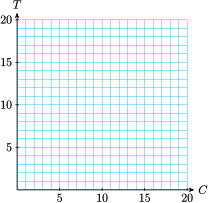

Section 1.6 Chapter Summary and Review
Subsection Glossary
mathematical model
linear model
evaluate an expressions
solve an equation
increasing graph
decreasing graph
inequality
intercepts
linear equation
solution of an equation
graph of an equation
ordered pair
rate
rate of change
net change
slope
slope-intercept form
point-slope form
Subsection Key Concepts
A mathematical model is a simplified description of reality that helps us understand a system or process.
We can describe a relationship between variables with a table of values, a graph, or an equation.
-
Linear models have equations of the form:
\begin{gather*} y = (\blert{\text{starting value}}) + (\blert{\text{rate of change}}) \cdot x \end{gather*} The general form for a linear equation is: \(Ax + By = C\text{.}\)
We can use the intercepts to graph a line. The intercepts are also useful for interpreting a model.
The graph of an equation in two variables is just a picture of all its solutions.
Lines have constant slope.
The slope of a line gives us the rate of change of one variable with respect to another.
-
Formulas for Linear Models
slope: \(\qquad\qquad m=\dfrac{\Delta y}{\Delta x} = \dfrac{Y_2-y_1}{x_2-x_1} \text{,}\) \(x_1 \ne x_2\)
slope-intercept form: \(\qquad\qquad y=b+mx \)
point-slopet form: \(\qquad\qquad y=y_1+m(x-x_1) \)
The slope-intercept form is useful when we know the initial value and the rate of change.
The point-slope form is useful when we know the rate of change and one point on the line.
.
Exercises Chapter 1 Review Problems
1.
Last year, Pinwheel Industries introduced a new model calculator. It cost $2000 to develop the calculator and $20 to manufacture each one.
-
Complete the table of values showing the total cost, \(C\text{,}\) of producing \(n\) calculators.
\(n\) \(100\) \(500\) \(800\) \(1200\) \(1500\) \(C\) \(\hphantom{0000}\) \(\hphantom{0000}\) \(\hphantom{0000}\) \(\hphantom{0000}\) \(\hphantom{0000}\) Write an equation that expresses \(C\) in terms of \(n\text{.}\)
-
Graph the equation by hand.
What is the cost of producing 1000 calculators? Illustrate this as a point on your graph.
How many calculators can be produced for $10,000? Illustrate this as a point on your graph.
2.
The world's oil reserves were 2100 billion barrels in 2005; total annual consumption is 28 billion barrels.
-
Complete the table of values that shows the remaining oil reserves \(R\) in terms of time \(t\) (in years since 2005).
\(t\) \(~ 5 ~\) \(~10~\) \(~15~\) \(~20~\) \(~25~\) \(R\) \(\) \(\) \(\) \(\) \(\) Write an equation that expresses \(R\) in terms of \(t\text{.}\)
-
Find the intercepts and graph the equation by hand.
What do the intercepts tell us about the world's oil supply?
3.
Alida plans to spend part of her vacation in Atlantic City and part in Saint-Tropez. She estimates that after airfare her vacation will cost $60 per day in Atlantic City and $100 per day in Saint-Tropez. She has $1200 to spend after airfare.
Write an equation that relates the number of days, \(C\text{,}\) Alida can spend in Atlantic City and the number of days, \(T\text{,}\) in Saint-Tropez.
-
Find the intercepts and graph the equation by hand.
 If Alida spends 10 days in Atlantic City, how long can she spend in Saint-Tropez?
What do the intercepts tell us about Alida's vacation?
For Problems 4–9, graph the equation on graph paper. Use the most convenient method for each problem.
4.
\(\dfrac{x}{6}-\dfrac{y}{12}=1 \)
5.
\(50x=40y-20,000 \)
6.
\(1.4x+2.1y=8.4 \)
7.
\(3x-4y=0 \)
8.
\(3x-4y=0 \)
9.
\(4x=-12 \)
10.
The table shows the amount of oil, \(B\) (in thousands of barrels), left in a tanker \(t\) minutes after it hits an iceberg and springs a leak.
| \(t\) | \(0\) | \(10\) | \(20\) | \(30\) |
| \(B\) | \(800\) | \(750\) | \(700\) | \(650\) |
Write a linear function for \(B\) in terms of \(t\text{.}\)
Choose appropriate window settings on your calculator and graph your function.
Give the slope of the graph, including units, and explain the meaning of the slope in terms of the oil leak.
11.
An interior decorator bases her fee on the cost of a remodeling job. The accompanying table shows her fee, \(F\text{,}\) for jobs of various costs, \(C\text{,}\) both given in dollars.
| \(C\) | \(5000\) | \(10,000\) | \(20,000\) | \(50,000\) |
| \(F\) | \(1000\) | \(1500\) | \(2500\) | \(5500\) |
Write a linear function for \(F\) in terms of \(C\text{.}\)
Choose appropriate window settings on your calculator and graph your function.
Give the slope of the graph, including units, and explain the meaning of the slope in terms of the the decorator's fee.
For Problems 12–15, find the slope of the line segment joining the points.
12.
\((-1,4), ~(3,-2) \)
13.
\((5,0), ~(2,-6) \)
14.
\((6.2,1.4), ~(-2.3,4,8) \)
15.
\((0,-6.4), ~(-5.6,3.4) \)
For Problems 16–17, which tables could describe variables related by a linear equation?
16.
\(r\) \(E\) \(1\) \(5\) \(2\) \(\dfrac{5}{2} \) \(3\) \(\dfrac{5}{3} \) \(4\) \(\dfrac{5}{4} \) \(5\) \(1\) \(s\) \(t\) \(10\) \(6.2\) \(20\) \(9.7 \) \(30\) \(12.6 \) \(40\) \(15.8 \) \(50\) \(19.0\)
17.
\(w\) \(A\) \(2\) \(-13\) \(4\) \(-23 \) \(6\) \(-33 \) \(8\) \(-43 \) \(10\) \(-53\) \(x\) \(G\) \(0\) \(0\) \(2\) \(5 \) \(4\) \(10 \) \(8\) \(20 \) \(16\) \(40\)
For Problems 18–19, the table gives values for a linear equation in two variables. Fill in the missing values.
18.
| \(d\) | \(V\) |
| \(-5\) | \(-4.8\) |
| \(-2\) | \(-3 \) |
| \(\) | \(-1.2\) |
| \(6\) | \(1.8 \) |
| \(10\) | \(\) |
19.
| \(q\) | \(S\) |
| \(-8\) | \(-8\) |
| \(-4\) | \(36 \) |
| \(3\) | \(\) |
| \(\) | \(200 \) |
| \(9\) | \(264\) |
20.
The planners at AquaWorld want the small water slide to have a slope of 25%. If the slide is 20 feet tall, how far should the end of the slide be from the base of the ladder?
For Problems 21–24, find the slope and \(y\)-intercept of the line.
21.
\(2x-4y=5\)
22.
\(\dfrac{1}{2} x+\dfrac{2}{3} y=\dfrac{5}{6} \)
23.
\(8.4x + 2.1y = 6.3\)
24.
\(y - 3 = 0 \)
For Problems 25 and 26,
Graph by hand the line that passes through the given point with the given slope.
Find the equation of the line.
25.
\((-4,6)\text{;}\) \(~ m=\dfrac{-2}{3} \)
26.
\((2,-5)\text{;}\) \(~ m=\dfrac{3}{2} \)
27.
The rate at which air temperature decreases with altitude is called the lapse rate. In the troposphere, the layer of atmosphere that extends from the Earth’s surface to a height of about 7 miles, the lapse rate is about \(3.6\degree\text{F}\) for every 1000 feet. (Source: Ahrens, 1998)
If the temperature on the ground is \(62\degree\text{F}\text{,}\) write an equation for the temperature, \(T\text{,}\) at an altitude of \(h\) feet.
What is the temperature outside an aircraft flying at an altitude of 30,000 feet? How much colder is that than the ground temperature?
What is the temperature at the top of the troposphere?
28.
\((3,-5) \text{,}\) \(~(-2,4) \)
29.
\((0,8) \text{,}\) \(~(4,-2) \)
30.
The population of Maple Rapids was 4800 in 2005 and had grown to 6780 by 2020. Assume that the population increases at a constant rate.
Make a table of values showing two data points.
Find a linear equation that expresses the population, \(P\text{,}\) of Maple Rapids in terms of the number of years, \(t\text{,}\) since 2005.
State the slope of the line, including units, and explain its meaning in the context of the problem.
For Problems 31 and 32,
Find the slope and \(y\)-intercept of the line.
Write an equation for the line.
31.
32.
33.
What is the slope of the line whose intercepts are \((-5, 0)\) and \((0, 3)\text{?}\)
34.
Find the \(x\)- and \(y\)-intercepts of the line \(\dfrac{x}{4}-\dfrac{y}{6}=1 \text{.}\)
What is the slope of the line in part (a)?
35.
Find the \(x\)- and \(y\)-intercepts of the line \(y= 2+ \dfrac{3}{2}(x-4) \text{.}\)
Find the point on the line whose \(x\)-coordinate is 4. Can there be more than one such point?
36.
Find an equation in slope-intercept form for the line of slope \(\dfrac{6}{5} \) that passes through \((-3, -4)\text{.}\)